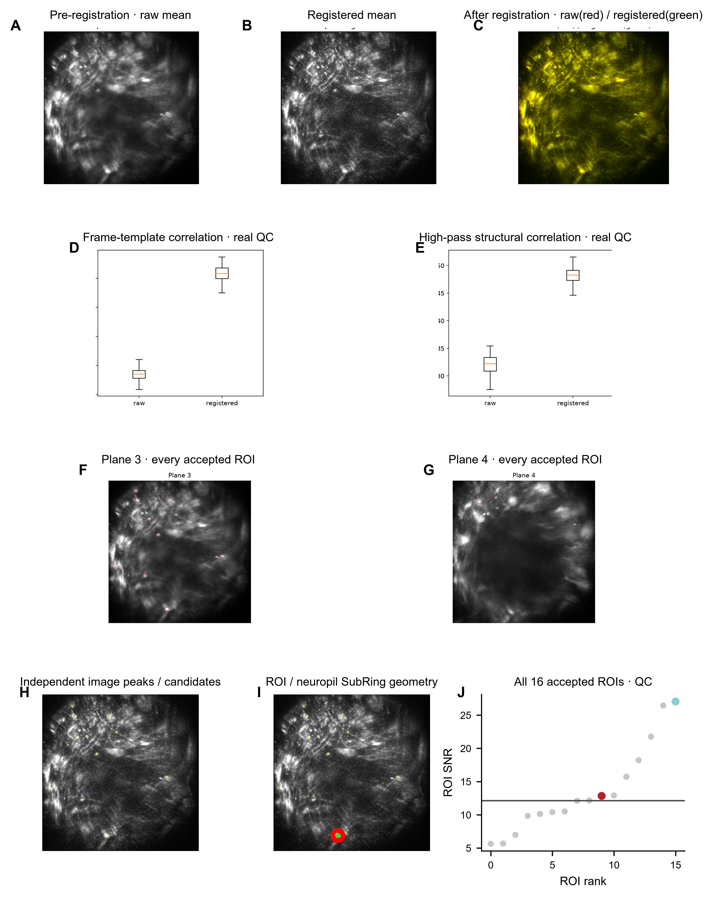
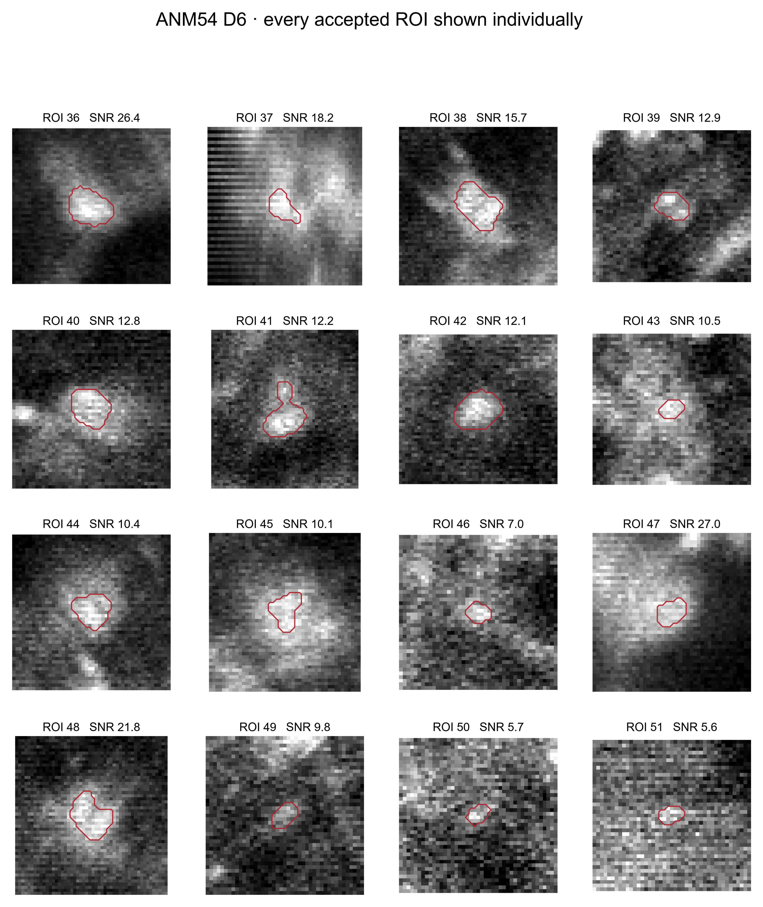
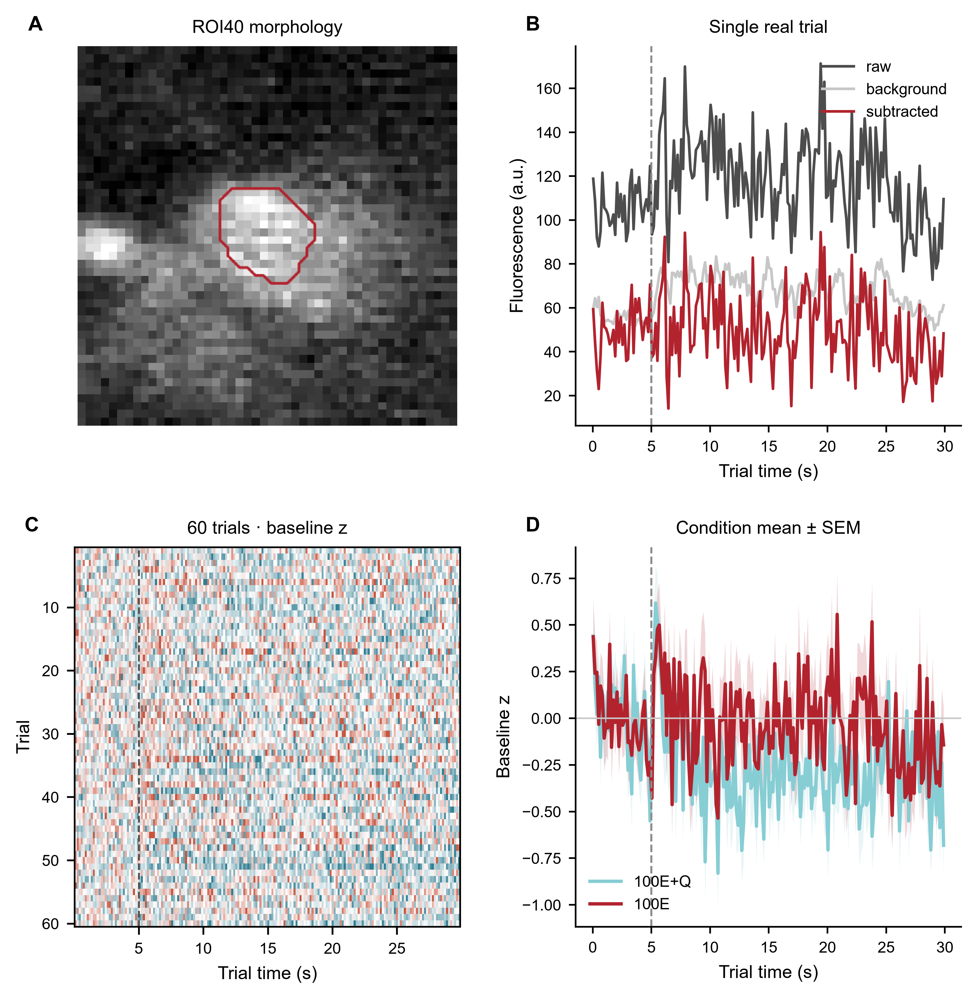
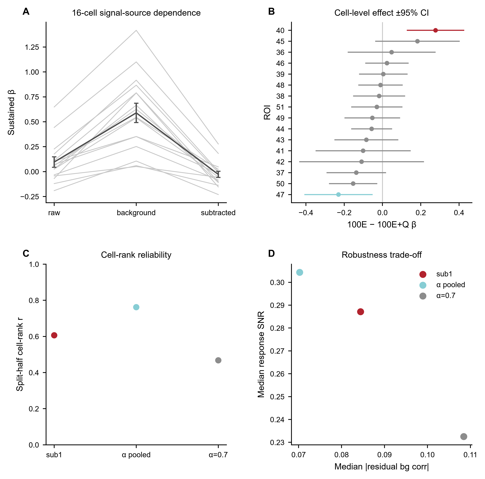
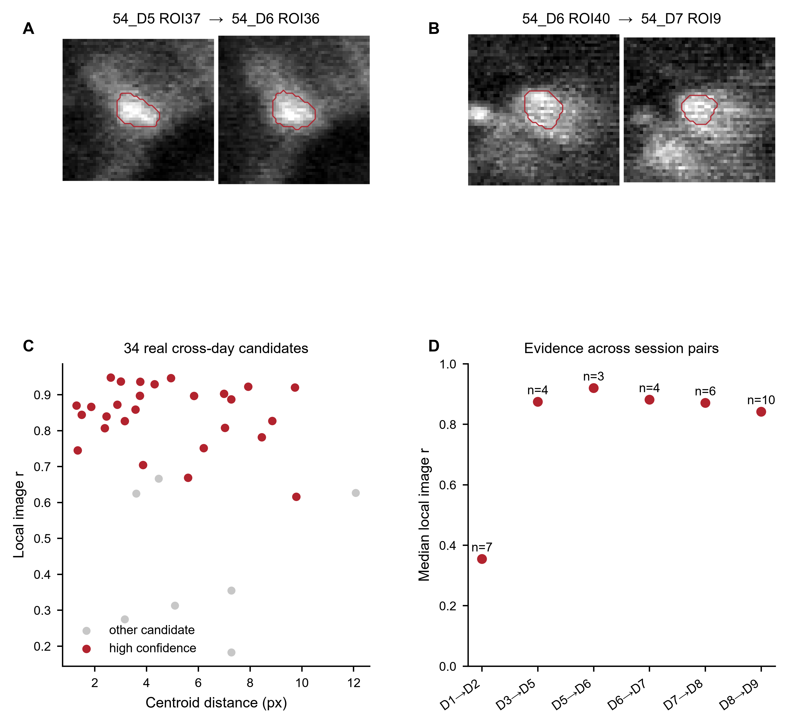
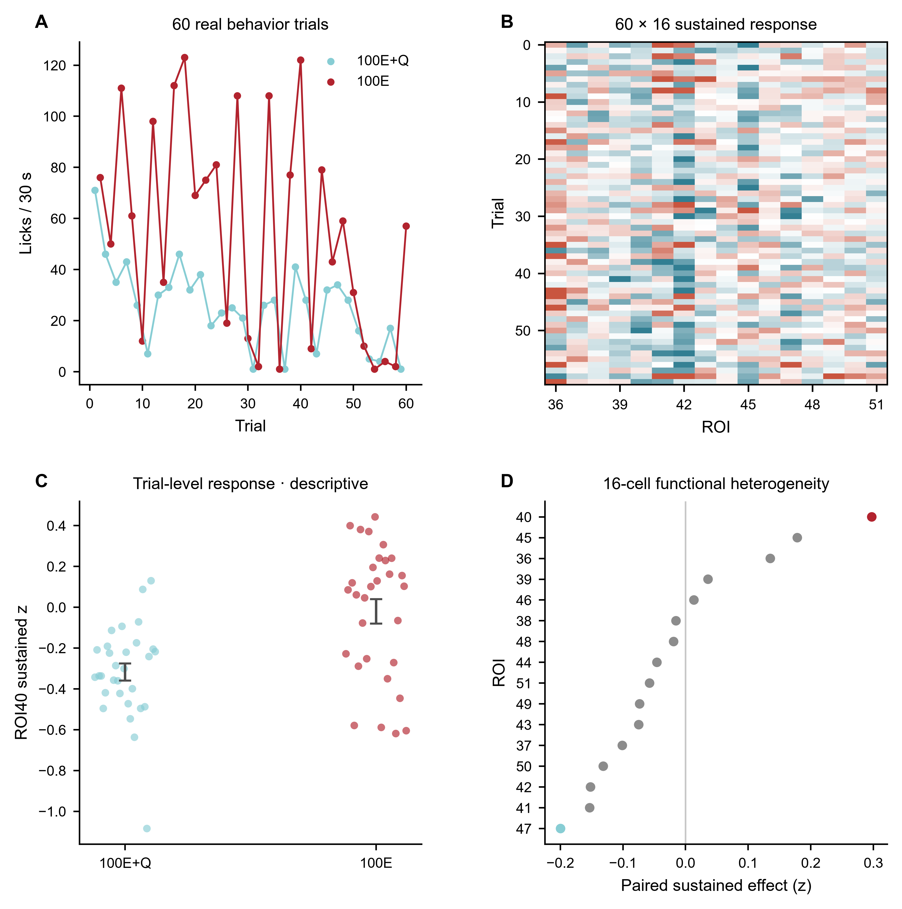

Stage00→10 现在是真正可执行的 state machine，不再只是脚本和历史文件夹。
每个 stage 都记录 inputs、parameters、outputs、QC、environment 和 state。局部失效只重跑下游；修改 extraction 不会重新做 registration。
Raw TIFF → per-ROI → release
从一个空 project 开始，走的就是未来新 dataset 使用的同一条命令路径。
每个完成的 session 都会留下真正可检查的 run record。
carma report PROJECT 自动生成 Stage00→10 ledger、provenance/QC、ROI overlay、per-ROI authority、单 ROI mask + 连续 trace + event-aligned trace + trial heatmap；如果存在 Stage08 candidate，还会生成独立 reviewer queue。
ROI ID 不重编号
cold-start 特意使用非连续 ROI ID，验证 Stage02→03→06→09 以及 report 全程保持原 ID。
本地直接打开
生成后的 report 可以直接双击打开，不要求另起 local web server。
Release gate
stage state、source hash、QC、release manifest 与可视化层分开保存。
Stage07 → Stage08 → 两名独立 reviewer → release refreeze 已经端到端跑通。
两天 fixture 使用完全不同、非连续的 ROI ID，因此通过测试必须依赖真正的跨天映射，而不是复用 ID。
Stage-major scheduler
所有 session 先一起完成 Stage01/02，之后才进入 Stage07/08。
Ground-truth pairs
11→101、24→205、37→309、58→444；全部 reciprocal-nearest，最大距离 2.15 px。
Image evidence
全图配准相关 0.946；candidate local correlation 为 0.915–0.916。
Reviewer consensus
两名独立 reviewer；0 unresolved、0 one-to-one conflict。
Release refreeze
consensus 会使 Stage09/10 失效；两者随后重跑并重新 freeze release。
Regression record
主页面直接展示真实 FOV、真实 trial 和真实 cell。
代表性 session：ANM54 Day19 / D6，100E versus 100E+Q。synthetic 只保留为页面最下方的 regression test，不再充当主结果。












打开 synthetic regression supplement
two-session synthetic fixture 只用于验证 Stage00→10、non-contiguous ROI ID、Stage07/08 matching、two-reviewer consensus、invalidation 与 release refreeze 能真正执行，不再作为主科学视觉。